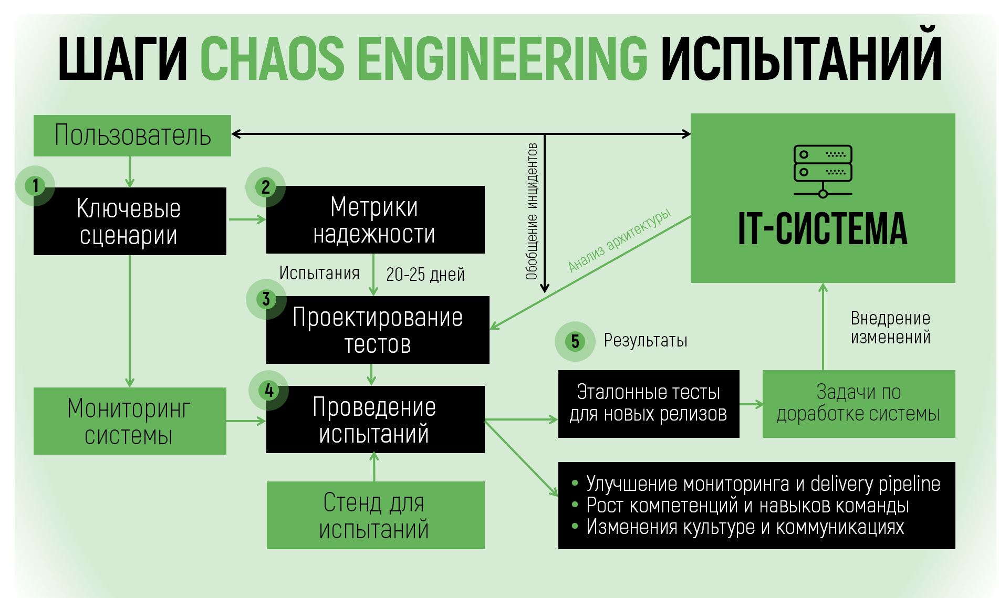

Тестирование надежности
Мы предлагаем услуги по тестированию и верификации надежности и отказоустойчивости ИТ-систем. Это тестирование необходимо для многоуровневых, распределенных систем, работа которых должна быть защищена от сбоев инфраструктуры и сторонних приложений.
Методология и шаги внедрения
На этой странице мы рассказываем о применяемой нами методологии хаос-тестирования (chaos engineering). С помощью хаос-тестов мы можем показать уязвимость системы как к типовым, так и к редким, но дорогостоящим сценариям сбоев.
Хаос-тесты обычно проводятся для систем, которые уже прошли другие виды тестирования (например, нагрузочное или стресс-тестирование), но в стадии эксплуатации копят историю инцидентов и требуют доработки отказоустойчивости. Хаос-тесты могут встраиваться в релизный цикл и подтверждать надежность системы против ранее выявленных или потенциальных сценариев сбоев.
Проведение хаос-тестов также повышает квалификацию команды эксплуатации и сопровождения ИТ-систем. Подготовка тестов и анализ их результатов ("gameday") позволяет разобрать инциденты, доработать системы мониторинга, изменить процедуры эксплуатации.
Chaos engineering: придумал Netflix – применяем мы
В 2010 году Netflix стал пионером хаос-тестирования (chaos engineering). Контролируемое внедрение ограниченных сетевых и аппаратных ошибок в работающие системы позволило Netflix выявить слабые стороны своих сервисов и предотвратить будущие сбои. Удачный опыт стал стандартной практикой разработки и эксплуатации крупных распределенных систем. Сhaos engineering внедряется в традиционном ритейле (Walmart), электронной коммерции (Alibaba), банках (Capital One). Цель внедрения - снизить прямые и скрытые издержки, связанные со сбоями или деградациями ИТ-систем, которые выражаются в деньгах, репутации, оттоке клиентов.
Кто сможет внедрить?
Компании, которые разрабатывают и эксплуатируют высоконагруженные IT-системы и хотят обеспечить более высокий уровень надежности своих пользовательских и служебных сервисов и готовы заимствовать с рынка лучшие практики работы.
Спрос на хаос-тестирование растет по мере усложнения IT-систем, перехода от монолитных к микросервисным архитектурам и миграции в облачные сервисы. Дополнительными мотивами для внедрения хаос-тестирования также являются:
- потребность в обеспечении совместной работы многочисленных систем и сервисов внутри организации, исключение ошибок на границах ответственности,
- необходимость повысить качество собственных и заказных разработок через требования к программному обеспечению и инфраструктуре,
- верификация работ, выполненных в сфере непрерывности бизнеса (business continuity / disaster recovery) и управления операционными рисками,
- обучение персонала команды эксплуатации на реальных контролируемых инцидентах.
Наши предложения
Наша базовая услуга - подготовка и проведение испытаний надежности автоматизированной системы (АС) с контролируемым внесением сбоев инфраструктурного уровня и уровня приложений ("хаос-испытание"). Услуга включает в себя:
- анализ пользовательских сценариев, архитектуры и истории инцидентов на АС;
- определение точек отказа, подготовка тестовых кейсов и сценариев тестирования;
- анализ тестового кластера, предоставленного заказчиком, и установка ПО, необходимого для испытаний;
- проведение самих испытаний и регистрацию их результатов;
- подготовку отчета о результатах тестирования.
Цикл такой услуги на показан на рисунке ниже.

По результатам тестирования обычно необходима доработка отказоустойчивости системы. За доработку системы обычно берется собственная команда разработки клиента, но эти работы также может быть поручена нам или нашим партнерам.
Помимо испытаний конкретных АС мы занимаемся автоматизацией хаос-тестов и включением тестов в релизный цикл (chaos gate). Для компаний, уже освоивших проведение хаос-тестов на отдельных системах, мы можем предложить разработку и обоснование корпоративной методологии хаос-тестирования.
Мы ведем подбор персонала в области разработки и эксплуатации ИТ-систем и проводим обучение по вопросам обеспечения надежности и отказоустойчивости как на стадии разработки, так и на стадии эксплуатации.